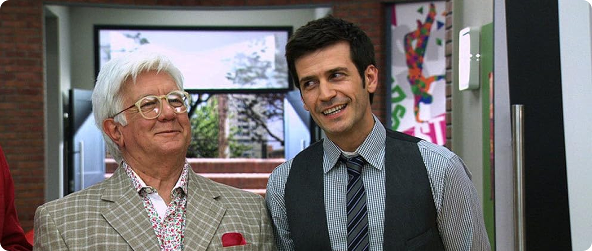
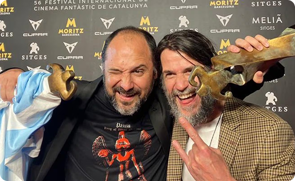
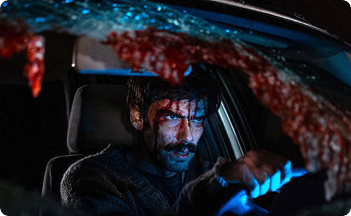

Ezequiel Rodríguez: de galán en "Violetta" a referente del terror

Ezequiel Rodríguez protagonizó una de las transformaciones más radicales del cine nacional. Tras formarse en teatro con Julio Chávez, su carrera dio un vuelco global al interpretar al recordado Pablo en Violetta, el fenómeno juvenil de Disney, y luego en Soy Luna. Sin embargo, dejó atrás la estética de galán pulcro para convertirse en el nuevo referente del terror argentino. Con una fisonomía demacrada y desorbitada, encarnó a Pedro en Cuando acecha la maldad, dirigida por Demián Rugna. El film hizo historia al ganar el Festival de Sitges y captar la atención de figuras de Hollywood como James Cameron.
El antes y después de Ezequiel


Ezequiel Rodríguez protagonizó una de las transformaciones más radicales del cine nacional. Tras formarse en teatro con Julio Chávez, su carrera dio un vuelco global en 2012 al interpretar al recordado Pablo en Violetta, el fenómeno juvenil de Disney, y luego en Soy Luna. En esa etapa, consolidó una imagen de galán televisivo impecable, peinado a la moda y con una calidez ideal para el público infanto-juvenil. Sin embargo, dejó atrás la estética limpia para convertirse en el nuevo referente del terror argentino. Con una fisonomía descuidada, barba tupida, pelo revuelto y una mirada desorbitada, encarnó a Pedro en la multipremiada película Cuando acecha la maldad, dirigida por Demián Rugna. Su rostro pasó a reflejar la crudeza, el sufrimiento feroz y la desesperación absoluta que exige el género. El film hizo historia al ganar el Festival de Sitges y captar la atención de figuras de Hollywood como James Cameron, abriéndole las puertas a importantes propuestas internacionales.
OTRAS NOTICIAS
NOTICIA
Damián Rugna podría dirigir la
próxima película de Alien

NOTICIA
Los productores de "Cuando acecha la maldad"
vuelven al Festival de Sitges
